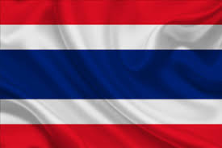

Conheça esse incrível país do Sudeste Asiático
Tailândia, oficialmente Reino da Tailândia (em tailandês: ราชอาณาจักรไทย; romaniz.: Ratcha Anachak Thaiⓘ, pronunciado: [râːtɕʰa-ʔaːnaːtɕɑ̀k-tʰɑj]), anteriormente conhecida como Sião (em tailandês: สยาม) é um estado soberano no centro da península da Indochina, no Sudeste asiático. É limitado a norte por Myanmar e Laos, a leste por Laos e Camboja, a sul pelo Golfo da Tailândia e pela Malásia, e a oeste pelo Mar de Andamão e pela extremidade sul de Mianmar. Suas fronteiras marítimas incluem o Vietnã, no Golfo da Tailândia, para o sudeste; e a Indonésia e a Índia no mar de Andamão, a sudoeste.
Os historiadores muitas vezes consideram o Reino de Sucotai como o início da história tailandesa, que se insere na influência do Reino de Aiutaia, o primeiro a ter contato com o Ocidente, através de uma missão diplomática portuguesa. Aiutaia teve uma longevidade de 417 anos, chegando ao fim com a guerra birmano-siamesa em 1767. Taksin libertou o país, estabelecendo a cidade de Thonburi como capital e adotando uma política de enfrentamento à ameaça de outras nações. A dinastia Chacri foi fundada por Rama I, o Grande e Banguecoque foi elevada à capital em 1782. Em meio à revolução, o país passou de monarquia absoluta a monarquia constitucional em 1932 e, em 23 de junho de 1939, deixou de chamar-se Sião e adotou seu nome atual, Tailândia. Atualmente, o país é regido por uma junta militar, que tomou o poder em maio de 2014, através de um golpe de Estado.[8] É liderada pelo rei Maha Vajiralongkorn, que ascendeu ao trono em 2016.
A cultura tailandesa incorpora uma grande influência da Índia, China, Camboja e outras partes do Sudeste Asiático. Ela é influenciada principalmente pelo animismo e o Budismo.[219][220] O Budismo Theravada salienta que a maioria das pessoas são incapazes de atingir o estado de iluminação perfeitamente feito. A acumulação de mérito dar-se-á através de práticas como rituais de oferta de alimentos aos monges e doações ao templo. Os ensinamentos religiosos servem como base de apoio para boa parte da visão cultural no país. Na Tailândia, o Budismo também possui a crença de que o rei é uma divindade hipotética, e que ele enfatiza o estilo sobre a vida dos cidadãos. Vários grupos étnicos diferentes, muitos dos quais são marginalizados, compõem a cultura da Tailândia. Alguns desses grupos são encontrados em outros países vizinhos, como Mianmar, Laos, Camboja e Malásia, e têm mediado a mudança entre sua cultura tradicional local e as influências culturais globais. A diáspora chinesa também forma uma parte significativa da sociedade tailandesa, particularmente em torno de Banguecoque. Sua integração bem-sucedida na sociedade tailandesa tem permitido a este grupo ocupar posições de poder econômico e político. A ligação econômica histórica entre o mercado chinês e grupos tailandeses é o principal motivo de o país compartilhar laços culturais com a China. Duas vezes por dia, às 08h00 e novamente às 18h00, o hino nacional é tocado por todos os meios de comunicação tailandeses. A população deve parar de executar o que se está fazendo e voltar sua atenção para prestar homenagem à bandeira durante o hino. Nas escolas, alunos ficam na frente da bandeira levantada e cantam o hino nacional às 08h00 todos os dias. O costume é praticado costumeiramente desde 1935, quando os regulamentos para o levantamento e abaixamento das cores da bandeira foram publicados na Royal Gazette. A Lei da bandeira, de 1979, decretou que aqueles que não respeitarem o costume de ficar em silêncio durante o hino estão sujeitos a uma multa e quase um ano de restrição de liberdade.
O Turismo é um importante setor econômico no Reino da Tailândia. As de receitas do turismo contribuem diretamente para o Produto interno bruto (PIB) tailandês com 12 trilhões de baht, cerca de 16% em 2013.[1] Quando se inclui recibos de viagens e turismo indiretos, o total estimado é 19,3% (2,3 trilhões de baht) no PIB da Tailândia. A Autoridade de Turismo da Tailândia (TAT) usa o slogan "Terra dos Sorrisos" para promover a Tailândia internacionalmente. Em 2015, este slogan foi complementado por uma campanha chamada "Descubra a tailanidade".
O número de turistas cresceu de 336.000 visitantes estrangeiros em 1967 para mais de 29 milhões de visitantes internacionais que visitaram a Tailândia em 2015.[4][5] A duração média de estadia em 2007 foi de 9,19 dias, gerando um número estimado de 547 bilhões de baht, cerca de 11 mil milhões de euros. Em 2015, 6,7 milhões de turistas eram oriundos de países da ASEAN e o número deve crescer para 8,3 milhões em 2016, gerando 245 bilhões de baht.[8] Em 2014, 4,6 milhões de visitantes chineses viajaram para a Tailândia.[7][9] Em 2015, os turistas chineses foram 7,9 milhões ou 27% de todos os turistas internacionais.[8] A Tailândia depende muito de turistas chineses para atender sua meta de receita de turismo de 2,2 trilhões de baht em 2015 e 2,3 trilhões em 2016. Os turistas asiáticos visitam principalmente Bangkok e as atracções históricas, naturais e culturais na sua vizinhança. Turistas ocidentais não só visitam Bangkok e arredores, mas, além disso muitos viajam para as praias do sul e ilhas. O norte é o principal destino para caminhadas e viagens de aventura com seus diversos grupos étnicos minoritários e montanhas arborizadas. A região que hospeda o menor número de turistas é Isan, no nordeste. Para acomodar os visitantes estrangeiros, o governo tailandês estabeleceu um sistema policial de turismo separado com escritórios nas principais áreas turísticas e seu próprio número de telefone de emergência central.[10] O turismo sexual também contribui para os números de turistas. Embora oficialmente ilegal, a prostituição na Tailândia é monitorada e regulada pelo governo para conter a propagação de doenças sexualmente transmissíveis e evitar excessos. Prostituição voltada para estrangeiros é acreditado para ser em torno de 20% da cena total de prostituição na Tailândia, e está concentrada em determinados distritos, como Pattaya, Patpong e Patong, bem como outros destinos turísticos.
A Tailândia é um país do Sudeste Asiático na Indochina. Com área de 513 120 quilômetros quadrados, dos quais 510 890 são terra e 2 230 são água, bem como 3 219 quilômetros de zona costeira e 5 673 de fronteira que divide com o Mianmar (2 416), Laos (1 845), Camboja (817) e Malásia (595). Sua elevação média é e 287 metros, com seu ponto mais baixo sendo o golfo da Tailândia que está a 0 metros acima do nível do mar e o mais alto sendo Doi Intanom com 2 565 metros. Segundo censo de 2018, tinha 68 615 858 habitantes, 97,5% tailandeses, 1,3% birmaneses e os demais 1,1% não especificados. Segundo estimativas de 2010, se fala 90,7% o tailandês e os restante 6,4% são outros línguas, inclusive o malaio e o birmanês. Seu clima é de monção sudoeste chuvosa, quente e nublada (meados de maio a setembro), seco, frio e de monção nordeste (novembro a meados de março) e seu istmo do sul sempre é quente e úmido. Seu terreno é formado por um planície central, o planalto de Corate no leste e montanhas nos demais locais. Segundo estimativas de 2011, possui 41,2% de seu território agriculturável, sendo 30,8% terras aráveis, 8,8% de colheiras permanentes e 1,6% de pasto permanente. Seu território, em 2011, ainda era coberto em 37,2% por florestas e os restantes 21,6% tinham outros usos. Irriga-se, para tais fins, 64 150 quilômetros quadrados (estimativa de 2012). Entre os recursos naturais disponíveis há estanho, borracha, gás natural, tungstênio, tântalo, madeira, chumbo, peixe, gesso, lignito e fluorita.
A economia da Tailândia teve um desenvolvimento relativamente bom em finais do século XX, mesmo sofrendo com uma crise em 1997. A crise financeira asiática de 1997 repercutiu-se por toda a região e prejudicou diversos países. Atingiu também a Tailândia que vinha tendo o maior crescimento econômico de sua história, com 8,4% ao ano entre 1990 e 1995, freando o crescimento e também desvalorizando acentuadamente o baht - a moeda do país. Desde então a Tailândia vem tentando se estabilizar economicamente conseguindo excelentes resultados, obtendo crescimento anual notável nos anos de 1999 até 2005. Atualmente o país é um dos maiores exportadores mundiais de arroz. Outros importantes produtos cultivados são o açúcar e a tapioca. Durante a crise, o mercado de produtos manufaturados e industrializados ajudou (e muito) à sua recuperação econômica, com a exportação de produtos como computadores, sapatos, eletroeletrônicos, joias, brinquedos, produtos de plástico, etc.
No entanto, a agricultura continua sendo de grande importância para a economia do país, com mais de metade da porcentagem total de mão de obra sendo dedicada a esse setor. Porém, no ano de 1995, a renda dos trabalhadores rurais era 15 vezes inferior ao da renda da população que trabalhava em outros setores. Em 1999, a renda familiar média tailandesa foi de US$ 318 por mês, enquanto, para o setor agrícola, a média foi de apenas US$ 888888* por mês. O turismo também é um setor que contribui bastante para o PIB do país. Em 2002, por exemplo, houve um aumento de 7% na quantidade de turistas em comparação ao ano anterior. Os Estados Unidos é o principal parceiro econômico da Tailândia, seguido pelo Japão e por países europeus.
Bangkok é a região mais industrializada do país e a região nordeste é a mais pobre. Embora a Tailândia venha se recuperando aos poucos da crise que abalou o país, a contínua melhora de sua economia depende de investimentos externos e aumento das exportações. O baixo e lento nível de crescimento de mão de obra qualificada e engenheiros pode limitar a produtividade e eficiência do setor tecnológico, peça chave para o desenvolvimento econômico do país. A Tailândia faz parte da APEC (Asia-Pacific Economic Cooperation), um bloco econômico que tem por objetivo transformar o Oceano Pacífico numa área de livre comércio e que engloba economias asiáticas, americanas e da Oceania. O país é o 47.º no ranking de competitividade do Fórum Econômico Mundial de 2013.